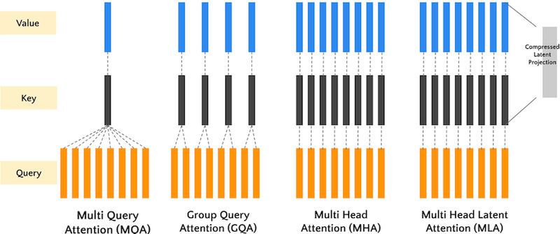
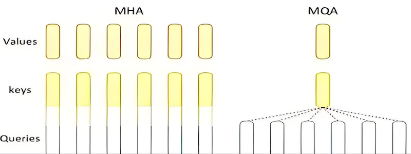
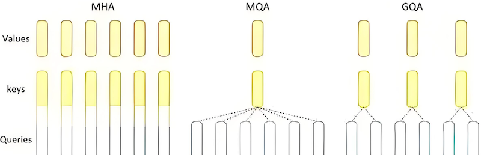
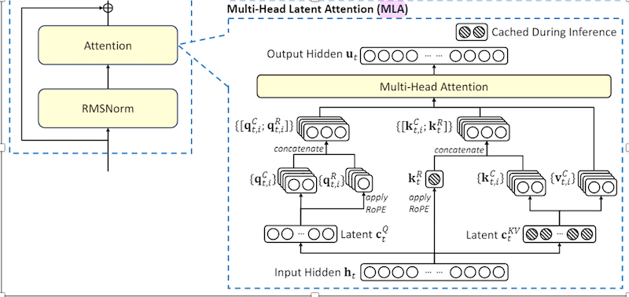
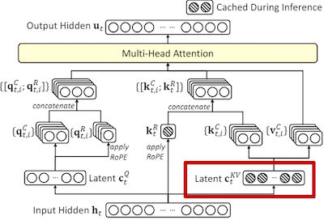
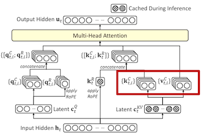
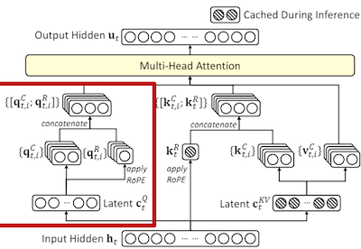
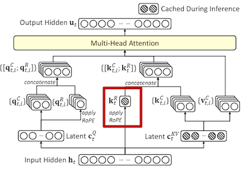
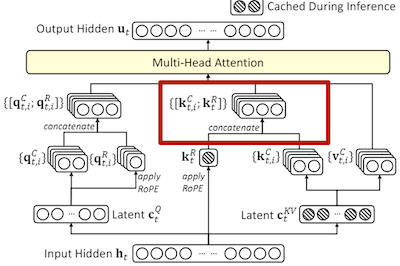
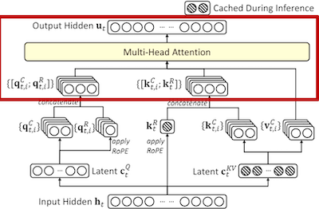

05.Attention 变种算法#
Author by: 张志达
1. 传统Attention痛点#
传统 Attention(MHA)，主要主要在时间复杂度 和显存占用 两个方面的瓶颈, 本文着重讲解显存瓶颈及解决办法, 下一篇则讲解时间复杂度的问题。
时间复杂度#
传统 Attention 中 时间复杂度为 \(O(n^2)\) ，这限制了序列长度的处理
显存瓶颈#
模型在线推理中 主要包含如下内容:
模型权重#
BF16 精度下，每个参数占 2 字节. 以 32B 为例, 则权重部分显存占用计算如下:
32 * 10^9 * 2 / 10^9 = 64GB
激活值 + 框架#
逐层计算且释放, 占用较小, 保守估计约 100MB/请求(先不计入)
KVCache#
在模型部署, 推理场景下传统 attention, MHA 下, 显存占用如下:
memory = 2 * sequence\_length * n\_layers * d\_model * precision\_byte * batch\_size
2: 指的是 key cache 和 value cache 两个
sequence_length: 指序列长度
n_layers: 指 transformer layer(block)的层数
d_model: 指的是隐藏层维度, 在 MHA 场景下 = num_heads(头的个数) * head_dim(每个头的维度)
precision_byte: 精度对应字节数, eg: bf16 对应 2 字节,p32 对应 4 字节
batch_size: 对应一次推理的 batch 数
以常见使用及开源项目(Qwen 系列)中配置, 计算显存占用:
精度: bf16
transformer layers: 64 层
d_model: 5120
sequence_length: 2048
kvcache ~= 2 * 2048 * 64 * 5120 * 2 * batch\_size / 10^9 GB
kvcache:
batch_size |
16 |
32 |
|---|---|---|
模型权重 |
64.0 |
64.0 |
KV Cache |
42.9 |
85.8 |
总计 |
~=106.9GB |
~= 149.8GB |
常用 nvidia 显卡显存: 4090(24G)，5090(32G),A100(80G), A800(80G), H20(96G), H200(141G),H800(80G)。
经上述背景描述, 我们已经对模型部署, 推理显存占用 有初步概念, 下面开始讲解优化思路
2. 优化思路#
减少 KV Cache 的目的就是要实现在更少的设备上推理更长的 Context，或者在相同的 Context 长度 下让推理的 batch size 更大，从而实现更快的推理速度或者更大的吞吐总量。
下述提到的 MQA, GQA, MLA 都是围绕“如何减少 KV Cache 同时尽可能地保证效果”这个主题发展而来

1. MQA (Multi-Query Attention) 多查询注意力#
1.1 简介#

Multi-Query Attention (MQA) 是传统 Multi-Head Attention 的一种优化变体，它通过在每个 head 共享 Key 和 Value, 只有 Q 在不同 head 中不同的方式来减少内存使用和计算复杂度，同时保持查询的多样性。
文章来源: 2019 年 Google 论文
原始文章: https://arxiv.org/pdf/1911.02150
1.2 解决的问题#
内存效率：减少 KV 缓存的内存占用
计算效率：降低注意力计算的时间复杂度
推理加速：在生成任务中显著提升推理速度
资源优化：在保持性能的同时减少模型参数量
1.3 数学表达#
在 MQA 中，多个 Query 头共享同一个 Key 和 Value 矩阵：
其中：
\(Q_i\)：第 \(i\) 个查询头
\(K, V\)：共享的 Key 和 Value 矩阵
\(W_i^Q\)：第 \(i\) 个查询头的权重矩阵
\(W^K, W^V\)：共享的 Key 和 Value 权重矩阵
1.4 伪代码实现#
def multi_query_attention(X, num_heads, d_model):
"""
Multi-Query Attention 实现
X: 输入序列 [seq_len, d_model]
num_heads: 查询头数量
d_model: 模型维度
"""
d_k = d_model // num_heads
# 为每个查询头创建 Q 的权重矩阵
W_q = [random_matrix(d_model, d_k) for _ in range(num_heads)]
# 共享的 K 和 V 权重矩阵
W_k = random_matrix(d_model, d_k)
W_v = random_matrix(d_model, d_k)
# 计算共享的 K 和 V
K = X @ W_k # [seq_len, d_k]
V = X @ W_v # [seq_len, d_k]
heads = []
for i in range(num_heads):
# 计算第 i 个查询头
Q_i = X @ W_q[i] # [seq_len, d_k]
# 计算注意力分数
scores = Q_i @ K.T # [seq_len, seq_len]
scores = scores / sqrt(d_k)
# 应用 softmax
attention_weights = softmax(scores)
# 加权求和
head_i = attention_weights @ V
heads.append(head_i)
# 拼接所有头的输出
concat_heads = concatenate(heads, axis=-1) # [seq_len, d_model]
# 最终线性变换
W_o = random_matrix(d_model, d_model)
output = concat_heads @ W_o
return output
1.5 优缺点#
优点: 节省显存，KV Cache 降低为原始的 1/h，减少计算和通信开销，提升推理速度。
缺点: 性能下降：KV Cache 压缩过于严重，影响模型训练稳定性和模型效果。
2. GQA (Grouped-Query Attention) 分组查询注意力#
2.1 简介#

Grouped-Query Attention (GQA) 是 MQA 和传统 Multi-Head Attention 之间的折中方案，它将查询头分组，每组共享一个 Key 和 Value 矩阵，在性能和效率之间取得平衡。
文章出处: 2023 Google
文章链接: https://arxiv.org/pdf/2305.13245
2.2 解决的问题#
平衡性能与效率：在 MQA 和 MHA 之间找到最佳平衡点。MHA 在大型模型和长序列处理中效率低下。MQA 性能损失过大，不适合对精度要求高的场景
任务适应性：根据任务需求调整分组数量
2.3 数学表达#
在 GQA 中，查询头被分为 \(G\) 组，每组共享 Key 和 Value：
其中：
\(G\)：分组数量
\(g(i)\)：第 \(i\) 个查询头所属的组
\(K_{g(i)}, V_{g(i)}\)：第 \(g(i)\) 组共享的 Key 和 Value 矩阵
2.4 伪代码实现#
def grouped_query_attention(X, num_heads, num_groups, d_model):
"""
Grouped-Query Attention 实现
X: 输入序列 [seq_len, d_model]
num_heads: 查询头数量
num_groups: 分组数量
d_model: 模型维度
"""
d_k = d_model // num_heads
heads_per_group = num_heads // num_groups
# 为每个查询头创建 Q 的权重矩阵
W_q = [random_matrix(d_model, d_k) for _ in range(num_heads)]
# 为每个组创建共享的 K 和 V 权重矩阵
W_k = [random_matrix(d_model, d_k) for _ in range(num_groups)]
W_v = [random_matrix(d_model, d_k) for _ in range(num_groups)]
# 计算每组的 K 和 V
K_groups = []
V_groups = []
for g in range(num_groups):
K_g = X @ W_k[g] # [seq_len, d_k]
V_g = X @ W_v[g] # [seq_len, d_k]
K_groups.append(K_g)
V_groups.append(V_g)
heads = []
for i in range(num_heads):
# 确定当前头所属的组
group_id = i // heads_per_group
# 计算第 i 个查询头
Q_i = X @ W_q[i] # [seq_len, d_k]
# 使用对应组的 K 和 V
K_g = K_groups[group_id]
V_g = V_groups[group_id]
# 计算注意力分数
scores = Q_i @ K_g.T # [seq_len, seq_len]
scores = scores / sqrt(d_k)
# 应用 softmax
attention_weights = softmax(scores)
# 加权求和
head_i = attention_weights @ V_g
heads.append(head_i)
# 拼接所有头的输出
concat_heads = concatenate(heads, axis=-1) # [seq_len, d_model]
# 最终线性变换
W_o = random_matrix(d_model, d_model)
output = concat_heads @ W_o
return output
2.5 优缺点#
优点:
性能和效率之间平衡：保证 KV 多样性同时，减少 KV Cache 大小；
稳定性：相比 MQA，训练过程较为稳定
缺点:
需人为合理设置组数 g
3. MLA (Multi-Latent Attention) 多潜在注意力#
3.1 简介#

Multi-Latent Attention (MLA) 是一种创新的注意力机制，它通过引入潜在变量来建模复杂的注意力模式，能够更好地捕捉序列中的长距离依赖和复杂关系。
文章出处: 2024.09 Deepseek 在初版 Deepseek V3 模型推出时技术报告
文章链接: https://github.com/LRriver/DeepSeek-V3/blob/main/DeepSeek_V3.pdf
3.2 解决的问题#
更高效的 KV 缓存压缩: MLA 通过低秩联合压缩，比 GQA 更有效地减少 KV 缓存需求，尤其在处理长文本时优势明显。
性能与效率的更好平衡: MLA 在减少 KV 缓存的同时，能保持与标准多头注意力相当的性能，而 GQA 可能在减少缓存的同时会牺牲部分性能。
训练与推理的双重优化: MLA 不仅优化了推理阶段，还通过低秩压缩减少了训练时的激活内存，而 GQA 主要关注推理阶段的优化
3.3 数学表达#
MLA 通过潜在变量 \(Z\) 来建模注意力分布：
其中：
\(Z\)：潜在变量矩阵，用于建模复杂的注意力模式
\(\text{LatentModule}\)：潜在变量生成模块
其他符号含义与标准注意力机制相同
3.4 计算步骤#
1. 计算代表 KV Cache 的潜在向量#

\(c_t^{KV}\) 是在时间步 \(t\) 计算的键值缓存潜在向量。 \(W^{DKV}\) 是一个权重矩阵，用于将隐藏状态 \(h_t\) 映射到键值缓存空间，这一步可以通过神经网络映射得到。 \(c_t^{KV}\) 相对于原来的 \(h_t\) 要小很多。
2. 计算 Query, Key 和 value 潜在向量#

\(k_t^C\) 是 Key 潜在向量，通过将 \(c_t^{KV}\) 与权重矩阵 \(W^{UK}\) 相乘得到，这一步是做上采样，通过潜向量特征 \(c_t^{KV}\) 映射得到较大的 \(k_t^C\) 用于后续的注意力计算。 \(v_t^C\) 计算同理。

K 向量的计算类似，通过潜在向量计算得到参与后续 MHA 计算的查询向量 q
3. 计算旋转位置编码（RoPE）#

用于在键向量中引入位置信息
4. 组合潜向量 k 和位置编码 k 得到最终的键向量#

最终的键向量 \(k_{(t,i)}\) 是通过将内容相关的键向量 \(k_{(t,i)}^C\) 和位置编码 \(k_t^{R}\) 连接起来得到
5. 注意力计算#

最终的注意力输出 \(u_t\) 是通过将查询 \((q_{(t,i)})\)，键 \((k_{(t,i)})\) 和值 \((v_{(j,i)}^C)\) 结合起来计算。其中 \(o_{(t,i)}\) 是第 i 个注意力头的输出
3.5 伪代码实现#
def multi_latent_attention(X, num_heads, d_model, latent_kv_dim, rope_params):
"""
Multi-Latent Attention 实现（按照“计算步骤 1-5”对应实现）
X: 输入序列 [seq_len, d_model]
num_heads: 注意力头数量
d_model: 模型维度
latent_kv_dim: KV 缓存潜在向量维度（步骤 1：缩小后的维度）
rope_params: RoPE 位置编码参数（步骤 3）
"""
d_k = d_model // num_heads
# 步骤 1：计算代表 KV Cache 的潜在向量 c_t^KV
# 将隐藏状态 h_t（此处为 X 的每个时间步行向量）映射到更小的 KV 空间
W_d_kv = random_matrix(d_model, latent_kv_dim)
C_kv = X @ W_d_kv # [seq_len, latent_kv_dim]
# 步骤 2：由 c_t^KV 上采样得到内容相关的潜在向量 Q^C, K^C, V^C
# 使用不同的上采样矩阵分别得到每个 head 的 Q/K/V 内容分量
W_uq = [random_matrix(latent_kv_dim, d_k) for _ in range(num_heads)]
W_uk = [random_matrix(latent_kv_dim, d_k) for _ in range(num_heads)]
W_uv = [random_matrix(latent_kv_dim, d_k) for _ in range(num_heads)]
Q_c_list = [] # 每个 head 的 Q^C
K_c_list = [] # 每个 head 的 K^C
V_c_list = [] # 每个 head 的 V^C
for i in range(num_heads):
Q_c_list.append(C_kv @ W_uq[i]) # [seq_len, d_k]
K_c_list.append(C_kv @ W_uk[i]) # [seq_len, d_k]
V_c_list.append(C_kv @ W_uv[i]) # [seq_len, d_k]
# 步骤 3：计算旋转位置编码（RoPE），得到位置相关的键向量 K^R
# 这里生成形状为 [seq_len, d_k] 的位置编码分量，供各 head 共享
K_r = apply_rope_positions(C_kv.shape[0], d_k, rope_params) # [seq_len, d_k]
# 步骤 4：组合潜向量 k^C 与位置编码 k^R 得到最终键向量 K
# 文档描述为“连接（concat）”，随后投影回 d_k，保证与 Q^C 维度一致
W_k_mix = [random_matrix(2 * d_k, d_k) for _ in range(num_heads)]
K_list = [] # 每个 head 的最终 K
for i in range(num_heads):
K_concat = concatenate([K_c_list[i], K_r], axis=-1) # [seq_len, 2*d_k]
K_i = K_concat @ W_k_mix[i] # [seq_len, d_k]
K_list.append(K_i)
# 步骤 5：注意力计算（使用 Q=Q^C, K=组合后的 K, V=V^C）
heads = []
for i in range(num_heads):
scores = Q_c_list[i] @ K_list[i].T # [seq_len, seq_len]
scores = scores / sqrt(d_k)
attention_weights = softmax(scores)
head_i = attention_weights @ V_c_list[i]
heads.append(head_i)
# 拼接所有头输出并线性变换
concat_heads = concatenate(heads, axis=-1) # [seq_len, d_model]
W_o = random_matrix(d_model, d_model)
output = concat_heads @ W_o
return output
def apply_rope_positions(seq_len, d_k, rope_params):
"""
旋转位置编码（RoPE）生成（对应“步骤 3”）
返回形状 [seq_len, d_k] 的位置编码向量，用于形成 K^R
"""
# 伪代码：根据 rope_params 产生 cos/sin 参数，并生成对应维度的位置向量
return rope_matrix(seq_len, d_k, rope_params) # [seq_len, d_k]
def rope_matrix(seq_len, d_k, rope_params):
"""
构建 RoPE 基向量矩阵（示意；细节实现取决于具体 RoPE 定义）
"""
# 占位实现：返回一个与维度匹配的占位矩阵
return random_matrix(seq_len, d_k)
4. 三种注意力机制对比#
特性 |
MQA |
GQA |
MLA |
|---|---|---|---|
KV 缓存占用 |
显存占用低(仅需 1 组 KV 缓存) |
显存占用低于 MHA, 但高于 MQA(分组共享 KV cache) |
显存占用显著降低(低秩压缩) |
计算复杂度 |
最低(共享 KV 计算) |
中等(分组共享 KV 计算) |
低于 MHA 和 GQA(低秩空间计算) |
模型效果 |
略低于 MHA(共享 KV 导致信息损失) |
接近 MHA(分组共享平衡性能效率) |
接近 MHA(低秩压缩保留关键特征) |
应用模型 |
Falcon 系列模型 |
LLaMA-2/LLaMA-3、Qwen3 |
DeepSeek-V3、Kimi-K2 |
5.总结与思考#
本章节为 对传统 attention 机制, 显存占用问题的优化改进。但也仅是基础, 各家在解决长序列问题时, 还会有很多其他的解决办法, 其中不少都是以上述 attention 变种为基础。未来 attention 优化的方向一定为高效, 可扩展, 注意力效果好, 适合长上下文的方向 如下:
减少复杂度：随着大模型发展，通过优化 Attention 计算复杂度提出 Linear Attention 等
长序列建模：结合稀疏注意力与动态路由，进一步压缩 KV Cache。
多模态扩展：探索跨模态注意力交互，如视觉-语言联合表征。
本节视频#
参考与引用#
!!!!!!!!!加入参考的文章和内容